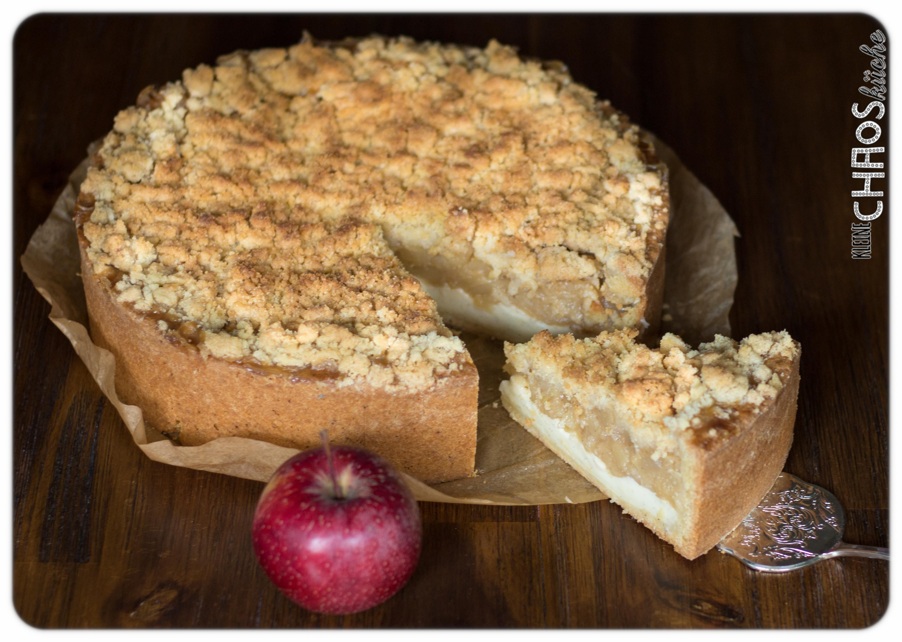

Apfelkuchen

Description
A traditional German Apple pie adds delicious sweet crumbs on top!
- 2 ¼ cups sifted all-purpose flour
- 1 ⅛ cups warm milk
- ¼ cup white sugar
- 1 (.25 ounce) package active dry yeast
- 6 tablespoons butter, softened
- 1 tablespoon vanilla extract
- 1 pinch salt
- 3 large apples - peeled, cored, and sliced
- 1 cup white sugar
- ¾ cup sifted all-purpose flour
- 2 ounces candied lemon peel, chopped (Optional)
- ½ teaspoon ground cinnamon
- ¼ teaspoon ground nutmeg
- 1 pinch salt
- ½ cup butter
- Grease the bottom and sides of a 9x13-inch baking dish or a 9-inch
springform pan.
- Beat 2 1/4 cup flour, milk, 1/4 cup sugar, yeast, 6 tablespoons
butter, vanilla extract, and 1 pinch salt in a large bowl with an
electric mixer on high until dough is smooth, about 5 minutes;
spread into baking dish and press dough up the sides. Press apple
slices into dough.
- Mix 1 cup sugar, 3/4 cup flour, candied lemon peel, cinnamon,
nutmeg, and 1 pinch salt in a bowl. Cut in 1/2 cup butter with a
knife or pastry blender until mixture resembles coarse crumbs;
sprinkle over apples. Allow dough to rise for 30 minutes.
- Preheat oven to 400 degrees F (200 degrees C).
- Bake in preheated oven until cake is golden brown and apples are tender, about 35 minutes.